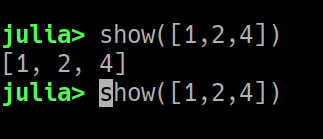
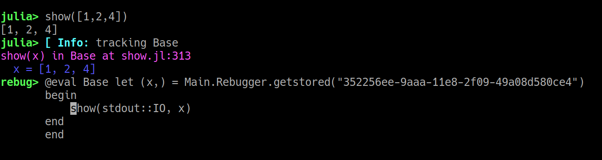

Usage
Rebugger works from Julia's native REPL prompt. Currently there are exactly three keybindings, which here will be described as:
- Meta-i, which maps to "interpret"
- Meta-e, which maps to "enter" or "step in"
- Meta-s, which maps to "stacktrace" (for commands that throw an error)
Meta often maps to Esc, and if using Esc you should hit the two keys in sequence rather than simultaneously. For many users Alt (sometimes specifically Left-Alt, or Option on macs) may be more convenient, as it can be pressed simultaneously with the key.
Of course, you may have configured Rebugger to use different key bindings (see Customize keybindings).
Interpret mode
Interpret mode simulates an IDE debugger at the REPL: rather than entering your commands into a special prompt, you use single keystrokes to quickly advance through the code.
Let's start with an example:
julia> using Rebugger
julia> a = [4, 1, 3, 2];Now we're going to call sort, but don't hit enter:
julia> sort(a)Instead, hit Meta-i (Esc-i, Alt-i, or option-i):
interpret> sort(a)[ Info: tracking Base
sort(v::AbstractArray{T,1} where T) in Base.Sort at sort.jl:742
v = [4, 1, 3, 2]
742 sort(v::AbstractVector; kws...) = begin
742 sort!(copymutable(v); kws...)
end
The message informs you that Revise (which is used by Rebugger) is now examining the code in Base to extract the definition of sort. There's a considerable pause the first time you do this, but later it should generally be faster.
After the "Info" line, you can see the method you called printed on top. After that are the local variables of sort, which here is just the array you supplied. (You can see some screenshots below in the "edit mode" section that show these in color. The meaning is the same here.) The "742" indicates the line number of "sort.jl", where the sort method you're calling is defined. Finally, you'll see a representation of the definition itself. Rebugger typically shows you expressions rather than verbatim text; unlike the text in the original file, this works equally well for @evaled functions and generated functions.
The current line number is printed in yellow; here, that's both lines, since the original definition was written on a single line.
We can learn about the possibilities by typing ?:
Commands:
space: next line
enter: continue to next breakpoint or completion
→: step in to next call
←: finish frame and return to caller
↑: display the caller frame
↓: display the callee frame
b: insert breakpoint at current line
c: insert conditional breakpoint at current line
r: remove breakpoint at current line
d: disable breakpoint at current line
e: enable breakpoint at current line
q: abort (returns nothing)
sort(v::AbstractArray{T,1} where T) in Base.Sort at sort.jl:742
v = [4, 1, 3, 2]
742 sort(v::AbstractVector; kws...) = begin
742 sort!(copymutable(v); kws...)
endLet's try stepping in to the call: hit the right arrow, at which point you should see
sort(v::AbstractArray{T,1} where T) in Base.Sort at sort.jl:742
#sort#8(kws, ::Any, v::AbstractArray{T,1} where T) in Base.Sort at sort.jl:742
#sort#8 = Base.Sort.#sort#8
kws = Base.Iterators.Pairs{Union{},Union{},Tuple{},NamedTuple{(),Tuple{}}}()
@_3 = sort
v = [4, 1, 3, 2]
742 sort(v::AbstractVector; kws...) = begin
742 sort!(copymutable(v); kws...)
endWe're now in a "hidden" method #sort#8, generated automatically by Julia to handle keyword and/or optional arguments. This is what actually contains the main body of sort. You'll note the source expression hasn't changed, because it's generated from the same definition, but that some additional arguments (kws and the "nameless argument" @_3) have appeared.
If we hit the right arrow again, we enter copymutable. Our interest is in stepping further into sort, so we're not going to bother walking through copymutable; hit left arrow, which finishes the current frame and returns to the caller. This should return you to #sort#8. Then hit the right arrow again and you should be here:
sort(v::AbstractArray{T,1} where T) in Base.Sort at sort.jl:742
#sort#8(kws, ::Any, v::AbstractArray{T,1} where T) in Base.Sort at sort.jl:742
sort!(v::AbstractArray{T,1} where T) in Base.Sort at sort.jl:682
#sort!#7(alg::Base.Sort.Algorithm, lt, by, rev::Union{Nothing, Bool}, order::Base.Order.Ordering, ::Any, v::AbstractArray{T,1} where T) in Base.Sort at sort.jl:682
#sort!#7 = Base.Sort.#sort!#7
alg = Base.Sort.QuickSortAlg()
lt = isless
by = identity
rev = nothing
order = Base.Order.ForwardOrdering()
@_7 = sort!
v = [4, 1, 3, 2]
681 function sort!(v::AbstractVector; alg::Algorithm=defalg(v), lt=isless, by=identity, re…
682 ordr = ord(lt, by, rev, order)
683 if ordr === Forward && (v isa Vector && eltype(v) <: Integer)
684 n = length(v)Now you can see many more arguments. To understand everything you're seeing, sometimes it may help to open the source file in an editor (hit 'o' for open) for comparison.
Note that long function bodies are truncated; you only see a few lines around the current execution point.
Line 682 should be highlighted. Hit the space bar and you should advance to 683:
sort(v::AbstractArray{T,1} where T) in Base.Sort at sort.jl:742
#sort#8(kws, ::Any, v::AbstractArray{T,1} where T) in Base.Sort at sort.jl:742
sort!(v::AbstractArray{T,1} where T) in Base.Sort at sort.jl:682
#sort!#7(alg::Base.Sort.Algorithm, lt, by, rev::Union{Nothing, Bool}, order::Base.Order.Ordering, ::Any, v::AbstractArray{T,1} where T) in Base.Sort at sort.jl:682
#sort!#7 = Base.Sort.#sort!#7
alg = Base.Sort.QuickSortAlg()
lt = isless
by = identity
rev = nothing
order = Base.Order.ForwardOrdering()
@_7 = sort!
v = [4, 1, 3, 2]
ordr = Base.Order.ForwardOrdering()
681 function sort!(v::AbstractVector; alg::Algorithm=defalg(v), lt=isless, by=identity, re…
682 ordr = ord(lt, by, rev, order)
683 if ordr === Forward && (v isa Vector && eltype(v) <: Integer)
684 n = length(v)
685 if n > 1You can see that the code display also advanced by one line.
Let's go forward one more line (hit space) and then hit b to insert a breakpoint:
sort(v::AbstractArray{T,1} where T) in Base.Sort at sort.jl:742
#sort#8(kws, ::Any, v::AbstractArray{T,1} where T) in Base.Sort at sort.jl:742
sort!(v::AbstractArray{T,1} where T) in Base.Sort at sort.jl:682
#sort!#7(alg::Base.Sort.Algorithm, lt, by, rev::Union{Nothing, Bool}, order::Base.Order.Ordering, ::Any, v::AbstractArray{T,1} where T) in Base.Sort at sort.jl:682
#sort!#7 = Base.Sort.#sort!#7
alg = Base.Sort.QuickSortAlg()
lt = isless
by = identity
rev = nothing
order = Base.Order.ForwardOrdering()
@_7 = sort!
v = [4, 1, 3, 2]
ordr = Base.Order.ForwardOrdering()
#temp# = true
682 ordr = ord(lt, by, rev, order)
683 if ordr === Forward && (v isa Vector && eltype(v) <: Integer)
b684 n = length(v)
685 if n > 1
686 (min, max) = extrema(v)The b in the left column indicates an unconditional breakpoint; a c would indicate a conditional breakpoint.
At this point, hit Enter to finish the entire command (you should see the result printed at the REPL). Now let's run it again, by going back in the REPL history (hit the up arrow) and then hitting Meta-i again:
interpret> sort(a)
sort(v::AbstractArray{T,1} where T) in Base.Sort at sort.jl:742
v = [4, 1, 3, 2]
742 sort(v::AbstractVector; kws...) = begin
742 sort!(copymutable(v); kws...)
endWe may be back at the beginning, but remember: we set a breakpoint. Hit Enter to let execution move forward:
interpret> sort(a)
sort(v::AbstractArray{T,1} where T) in Base.Sort at sort.jl:742
#sort#8(kws, ::Any, v::AbstractArray{T,1} where T) in Base.Sort at sort.jl:742
sort!(v::AbstractArray{T,1} where T) in Base.Sort at sort.jl:682
#sort!#7(alg::Base.Sort.Algorithm, lt, by, rev::Union{Nothing, Bool}, order::Base.Order.Ordering, ::Any, v::AbstractArray{T,1} where T) in Base.Sort at sort.jl:682
#sort!#7 = Base.Sort.#sort!#7
alg = Base.Sort.QuickSortAlg()
lt = isless
by = identity
rev = nothing
order = Base.Order.ForwardOrdering()
@_7 = sort!
v = [4, 1, 3, 2]
ordr = Base.Order.ForwardOrdering()
#temp# = true
682 ordr = ord(lt, by, rev, order)
683 if ordr === Forward && (v isa Vector && eltype(v) <: Integer)
b684 n = length(v)
685 if n > 1
686 (min, max) = extrema(v)We're right back at that breakpoint again.
Let's illustrate another example, this time in the context of errors:
julia> convert(UInt, -8)
ERROR: InexactError: check_top_bit(Int64, -8)
Stacktrace:
[1] throw_inexacterror(::Symbol, ::Any, ::Int64) at ./boot.jl:583
[2] check_top_bit at ./boot.jl:597 [inlined]
[3] toUInt64 at ./boot.jl:708 [inlined]
[4] Type at ./boot.jl:738 [inlined]
[5] convert(::Type{UInt64}, ::Int64) at ./number.jl:7
[6] top-level scope at none:0Rebugger re-exports JuliaInterpreter's breakpoint manipulation utilities. Let's turn on breakpoints any time an (uncaught) exception is thrown:
julia> break_on(:error)Now repeat that convert line but hit Meta-i instead of Enter:
interpret> convert(UInt, -8)
convert(::Type{T}, x::Number) where T<:Number in Base at number.jl:7
#unused# = UInt64
x = -8
T = UInt64
7 (convert(::Type{T}, x::Number) where T <: Number) = begin
7 T(x)
endNow if you hit Enter, you'll be at the place where the error was thrown:
interpret> convert(UInt, -8)
convert(::Type{T}, x::Number) where T<:Number in Base at number.jl:7
UInt64(x::Union{Bool, Int32, Int64, UInt32, UInt64, UInt8, Int128, Int16, Int8, UInt128, UInt16}) in Core at boot.jl:738
toUInt64(x::Int64) in Core at boot.jl:708
check_top_bit(x) in Core at boot.jl:596
throw_inexacterror(f::Symbol, T, val) in Core at boot.jl:583
f = check_top_bit
T = Int64
val = -8
583 throw_inexacterror(f::Symbol, @nospecialize(T), val) = (@_noinline_meta; throw(Inexact…Try using the up and down arrows to navigate up and down the call stack. This doesn't change the notion of current execution point (that's still at that throw_inexacterror call above), but it does let you see where you came from.
You can turn this off with break_off and clear all manually-set breakpoints with remove().
A few important details
There are some calls that you can't step into: most of these are the "builtins," "intrinsics," and "ccalls" that lie at Julia's lowest level. Here's an example from hitting Meta-i on show:
interpret> show([1,2,4])
show(x) in Base at show.jl:313
x = [1, 2, 4]
313 show(x) = begin
313 show(stdout::IO, x)
end
That looks like a call you'd want to step into. But if you hit the right arrow, apparently nothing happens. That's because the next statement is actually that type-assertion stdout::IO. typeassert is a builtin, and consequently not a call you can step into.
When in doubt, just repeat the same keystroke; here, the second press of the right arrow takes you to the two-argument show method that you probably thought you were descending into.
Edit mode
Stepping in
Select the expression you want to step into by positioning "point" (your cursor) at the desired location in the command line:
It's essential that point is at the very first character of the expression, in this case on the s in show.
Don't confuse the REPL's cursor with your mouse pointer. Your mouse is essentially irrelevant on the REPL; use arrow keys or the other navigation features of Julia's REPL.
Now if you hit Meta-e, you should see something like this:
(If not, check Keyboard shortcuts and Customize keybindings.) The cyan "Info" line is an indication that the method you're stepping into is a function in Julia's Base module; this is shown by Revise (not Rebugger), and only happens once per session.
The remaining lines correspond to the Rebugger header and user input. The magenta line tells you which method you are stepping into. Indented blue line(s) show the value(s) of any input arguments or type parameters.
If you're following along, move your cursor to the next show call as illustrated above. Hit Meta-e again. You should see a new show method, this time with two input arguments.
Now let's demonstrate another important display item: position point at the beginning of the _show_empty call and hit Meta-e. The display should now look like this:
This time, note the yellow/orange line: this is a warning message, and you should pay attention to these. (You might also see red lines, which are generally more serious "errors.") In this case execution never reached _show_empty, because it enters show_vector instead; if you moved your cursor there, you could trace execution more completely.
You can edit these expressions to insert code to display variables or test changes to the code. As an experiment, try stepping into the show_vector call from the example above and adding @show limited to display a local variable's value:
When editing expressions, you can insert a blank line with Meta-Enter (i.e., Esc-Enter, Alt-Enter, or Option-Enter). See the many advanced features of Julia's REPL that allow you to efficiently edit these let-blocks.
Having illustrated the importance of "point" and the various colors used for messages from Rebugger, to ensure readability the remaining examples will be rendered as text.
Capturing stacktraces in edit mode
For a quick demo, we'll use the Colors package (add it if you don't have it) and deliberately choose a method that will end in an error: we'll try to parse a string as a Hue, Saturation, Lightness (HSL) color, except we'll "forget" that hue cannot be expressed as a percentage and deliberately trigger an error:
julia> using Colors
julia> colorant"hsl(80%, 20%, 15%)"
ERROR: LoadError: hue cannot end in %
Stacktrace:
[1] error(::String) at ./error.jl:33
[2] parse_hsl_hue(::SubString{String}) at /home/tim/.julia/dev/Colors/src/parse.jl:26
[3] _parse_colorant(::String) at /home/tim/.julia/dev/Colors/src/parse.jl:75
[4] _parse_colorant at /home/tim/.julia/dev/Colors/src/parse.jl:112 [inlined]
[5] parse(::Type{Colorant}, ::String) at /home/tim/.julia/dev/Colors/src/parse.jl:140
[6] @colorant_str(::LineNumberNode, ::Module, ::Any) at /home/tim/.julia/dev/Colors/src/parse.jl:147
in expression starting at REPL[3]:1To capture the stacktrace, type the last line again or hit the up arrow, but instead of pressing Enter, type Meta-s. After a short delay, you should see something like this:
julia> colorant"hsl(80%, 20%, 15%)"
┌ Warning: Tuple{getfield(Colors, Symbol("#@colorant_str")),LineNumberNode,Module,Any} was not found, perhaps it was generated by code
└ @ Revise ~/.julia/dev/Revise/src/Revise.jl:659
Captured elements of stacktrace:
[1] parse_hsl_hue(num::AbstractString) in Colors at /home/tim/.julia/packages/Colors/4hvzi/src/parse.jl:25
[2] _parse_colorant(desc::AbstractString) in Colors at /home/tim/.julia/packages/Colors/4hvzi/src/parse.jl:51
[3] _parse_colorant(::Type{C}, ::Type{SUP}, desc::AbstractString) where {C<:Colorant, SUP} in Colors at /home/tim/.julia/packages/Colors/4hvzi/src/parse.jl:112
[4] parse(::Type{C}, desc::AbstractString) where C<:Colorant in Colors at /home/tim/.julia/packages/Colors/4hvzi/src/parse.jl:140
parse_hsl_hue(num::AbstractString) in Colors at /home/tim/.julia/packages/Colors/4hvzi/src/parse.jl:25
num = 80%
rebug> @eval Colors let (num,) = Main.Rebugger.getstored("57dbc76a-0def-11e9-1dbf-ef97d29d2e25")
begin
if num[end] == '%'
error("hue cannot end in %")
else
return parse(Int, num, base=10)
end
end
end(Again, if this doesn't happen check Keyboard shortcuts and Customize keybindings.) You are in the method corresponding to [1] in the stacktrace. Now you can navigate with your up and down arrows to browse the captured stacktrace. For example, if you hit the up arrow twice, you will be in the method corresponding to [3]:
julia> colorant"hsl(80%, 20%, 15%)"
┌ Warning: Tuple{getfield(Colors, Symbol("#@colorant_str")),LineNumberNode,Module,Any} was not found, perhaps it was generated by code
└ @ Revise ~/.julia/dev/Revise/src/Revise.jl:659
Captured elements of stacktrace:
[1] parse_hsl_hue(num::AbstractString) in Colors at /home/tim/.julia/packages/Colors/4hvzi/src/parse.jl:25
[2] _parse_colorant(desc::AbstractString) in Colors at /home/tim/.julia/packages/Colors/4hvzi/src/parse.jl:51
[3] _parse_colorant(::Type{C}, ::Type{SUP}, desc::AbstractString) where {C<:Colorant, SUP} in Colors at /home/tim/.julia/packages/Colors/4hvzi/src/parse.jl:112
[4] parse(::Type{C}, desc::AbstractString) where C<:Colorant in Colors at /home/tim/.julia/packages/Colors/4hvzi/src/parse.jl:140
[5] @colorant_str(__source__::LineNumberNode, __module__::Module, ex) in Colors at /home/tim/.julia/packages/Colors/4hvzi/src/parse.jl:146
_parse_colorant(::Type{C}, ::Type{SUP}, desc::AbstractString) where {C<:Colorant, SUP} in Colors at /home/tim/.julia/packages/Colors/4hvzi/src/parse.jl:112
C = Colorant
SUP = Any
desc = hsl(80%, 20%, 15%)
rebug> @eval Colors let (C, SUP, desc) = Main.Rebugger.getstored("57d9ebc0-0def-11e9-2ab0-e5d1e4c6e82d")
begin
_parse_colorant(desc)
end
endYou can hit the down arrow and go back to earlier entries in the trace. Alternatively, you can pick any of these expressions to execute (hit Enter) or edit before execution. You can use the REPL history to test the results of many different changes to the same "method"; the "method" will be run with the same inputs each time.
When point is at the end of the input, the up and down arrows step through the history. But if you move point into the method body (e.g., by using left-arrow), the up and down arrows move within the method body. If you've entered edit mode, you can go back to history mode using PgUp and PgDn.
Important notes
"Missing" methods from stacktraces
Sometimes, there's a large difference between the "real" stacktrace and the "captured" stacktrace:
julia> using Pkg
julia> Pkg.add("NoPkg")
Updating registry at `~/.julia/registries/General`
Updating git-repo `https://github.com/JuliaRegistries/General.git`
ERROR: The following package names could not be resolved:
* NoPkg (not found in project, manifest or registry)
Please specify by known `name=uuid`.
Stacktrace:
[1] pkgerror(::String) at /home/tim/src/julia-1.0/usr/share/julia/stdlib/v1.0/Pkg/src/Types.jl:120
[2] #ensure_resolved#42(::Bool, ::Function, ::Pkg.Types.EnvCache, ::Array{Pkg.Types.PackageSpec,1}) at /home/tim/src/julia-1.0/usr/share/julia/stdlib/v1.0/Pkg/src/Types.jl:890
[3] #ensure_resolved at ./none:0 [inlined]
[4] #add_or_develop#13(::Symbol, ::Bool, ::Base.Iterators.Pairs{Union{},Union{},Tuple{},NamedTuple{(),Tuple{}}}, ::Function, ::Pkg.Types.Context, ::Array{Pkg.Types.PackageSpec,1}) at /home/tim/src/julia-1.0/usr/share/julia/stdlib/v1.0/Pkg/src/API.jl:59
[5] #add_or_develop at ./none:0 [inlined]
[6] #add_or_develop#12 at /home/tim/src/julia-1.0/usr/share/julia/stdlib/v1.0/Pkg/src/API.jl:29 [inlined]
[7] #add_or_develop at ./none:0 [inlined]
[8] #add_or_develop#11(::Base.Iterators.Pairs{Symbol,Symbol,Tuple{Symbol},NamedTuple{(:mode,),Tuple{Symbol}}}, ::Function, ::Array{String,1}) at /home/tim/src/julia-1.0/usr/share/julia/stdlib/v1.0/Pkg/src/API.jl:28
[9] #add_or_develop at ./none:0 [inlined]
[10] #add_or_develop#10 at /home/tim/src/julia-1.0/usr/share/julia/stdlib/v1.0/Pkg/src/API.jl:27 [inlined]
[11] #add_or_develop at ./none:0 [inlined]
[12] #add#18 at /home/tim/src/julia-1.0/usr/share/julia/stdlib/v1.0/Pkg/src/API.jl:69 [inlined]
[13] add(::String) at /home/tim/src/julia-1.0/usr/share/julia/stdlib/v1.0/Pkg/src/API.jl:69
[14] top-level scope at none:0
julia> Pkg.add("NoPkg") # hit Meta-s here
[1] pkgerror(msg::String...) in Pkg.Types at /home/tim/src/julia-1/usr/share/julia/stdlib/v1.1/Pkg/src/Types.jl:120
[2] #ensure_resolved#72(registry::Bool, ::Any, env::Pkg.Types.EnvCache, pkgs::AbstractArray{Pkg.Types.PackageSpec,1}) in Pkg.Types at /home/tim/src/julia-1/usr/share/julia/stdlib/v1.1/Pkg/src/Types.jl:981
[3] #add_or_develop#15(mode::Symbol, shared::Bool, kwargs, ::Any, ctx::Pkg.Types.Context, pkgs::Array{Pkg.Types.PackageSpec,1}) in Pkg.API at /home/tim/src/julia-1/usr/share/julia/stdlib/v1.1/Pkg/src/API.jl:34
[4] #add_or_develop#12(kwargs, ::Any, pkg::Union{AbstractString, PackageSpec}) in Pkg.API at /home/tim/src/julia-1/usr/share/julia/stdlib/v1.1/Pkg/src/API.jl:28
[5] add(args...) in Pkg.API at /home/tim/src/julia-1/usr/share/julia/stdlib/v1.1/Pkg/src/API.jl:59
pkgerror(msg::String...) in Pkg.Types at /home/tim/src/julia-1/usr/share/julia/stdlib/v1.1/Pkg/src/Types.jl:120
msg = ("The following package names could not be resolved:\n * NoPkg (not found in project, manifest or registry)\nPlease specify by known `name=uuid`.",)
rebug> @eval Pkg.Types let (msg,) = Main.Rebugger.getstored("1ac42628-4b15-11e9-28e7-33f71870bf31")
begin
throw(PkgError(join(msg)))
end
endNote that only five methods got captured but the stacktrace is much longer. Most of these methods, however, say "inlined" with line number 0. Rebugger has no way of finding such methods. However, you can enter (i.e., Meta-e) such methods from one that is higher in the stack trace.
Modified "signatures"
Some "methods" you see in the let block on the command line will have their "signatures" slightly modified. For example:
julia> dest = zeros(3);
julia> copyto!(dest, 1:4)
ERROR: BoundsError: attempt to access 3-element Array{Float64,1} at index [1, 2, 3, 4]
Stacktrace:
[1] copyto!(::IndexLinear, ::Array{Float64,1}, ::IndexLinear, ::UnitRange{Int64}) at ./abstractarray.jl:728
[2] copyto!(::Array{Float64,1}, ::UnitRange{Int64}) at ./abstractarray.jl:723
[3] top-level scope at none:0
julia> copyto!(dest, 1:4) # hit Meta-s here
Captured elements of stacktrace:
[1] copyto!(::IndexStyle, dest::AbstractArray, ::IndexStyle, src::AbstractArray) in Base at abstractarray.jl:727
[2] copyto!(dest::AbstractArray, src::AbstractArray) in Base at abstractarray.jl:723
copyto!(::IndexStyle, dest::AbstractArray, ::IndexStyle, src::AbstractArray) in Base at abstractarray.jl:727
__IndexStyle_1 = IndexLinear()
dest = [0.0, 0.0, 0.0]
__IndexStyle_2 = IndexLinear()
src = 1:4
rebug> @eval Base let (__IndexStyle_1, dest, __IndexStyle_2, src) = Main.Rebugger.getstored("21a8ab94-a228-11e8-0563-256e39b3996e")
begin
(destinds, srcinds) = (LinearIndices(dest), LinearIndices(src))
isempty(srcinds) || (checkbounds(Bool, destinds, first(srcinds)) && checkbounds(Bool, destinds, last(srcinds)) || throw(BoundsError(dest, srcinds)))
@inbounds for i = srcinds
dest[i] = src[i]
end
return dest
end
endNote that this copyto! method contains two anonymous arguments annotated ::IndexStyle. Rebugger will make up names for these arguments (here __IndexStyle_1 and __IndexStyle_2). While these will be distinct from one another, Rebugger does not check whether they conflict with any internal names.
This example illustrates a second important point: you may have noticed that this one was considerably slower to print. That's because capturing stacktraces overwrites the methods involved. Since copyto! is widely used, this forces recompilation of a lot of methods in Base.
In contrast with capturing stacktraces, stepping in (Meta-e) does not overwrite methods, so is sometimes preferred. And of course, interpret mode (Meta-i) also doesn't overwrite methods.